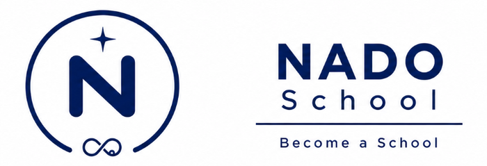

Become a School.
A school is more than a building. It begins wherever people choose to learn, teach, create, and grow together.
NADO School is a lifelong learning community where everyone is both a learner and a teacher. Every lesson shared becomes someone else's beginning.
A School Beyond Walls
NADO School is a lifelong learning community where anyone can learn, teach, create, and grow.
We believe education is not limited to classrooms, teachers, or age. A school exists wherever people share knowledge, skills, experiences, encouragement, and hope.
Every learner can become a teacher.
Every teacher continues to learn.
Every person can become a school for someone else.

"Nado" · Korean · "me too."
A Choice to Participate
"Nado" (나도) is a Korean word that literally means "me too." At NADO School, it represents something deeper: the personal decision to participate instead of simply observe. It is the choice to say:
"I will learn, too."
"I will create, too."
"I will contribute, too."
"I will grow, too."
Every learning community begins when someone chooses to say:
"Nado."
Learn. Own. Offer. Progress.
Learning is not a destination. It is a continuous cycle. Every cycle begins with learning. Learning becomes our own through practice and reflection. What we own becomes meaningful when we offer it to others. And every act of offering creates growth that inspires us to learn again.
Learn
Discover new knowledge, skills, and experiences.
Own
Turn learning into understanding through practice, reflection, and real experience.
Offer
Use what you have learned to teach, serve, encourage, and create opportunities for others.
Progress
Grow through every experience and begin the journey again.
↺ Progress returns to Learn — the loop never closes, it continues.
One Philosophy. Endless Possibilities.
NADO School is not defined by a single subject. Every field follows the same learning philosophy: Learn. Own. Offer. Progress.
Different paths. One journey.
One Philosophy. Many Experiences.
The NADO philosophy comes to life through real projects and communities.
Beat & Breeze
Interactive music, rhythm, and wellness experiences that bring people together.
Request a sessionNADO Passport
A lifelong digital record of learning, projects, service, and personal growth.
Explore the PassportBooks & Resources
Learning guides, educational materials, and community-created knowledge.
Videos & Stories
Performances, lessons, and experiences shared to inspire others around the world.
Watch and listenAn idea becomes learning.
Learning becomes service.
Service becomes lasting impact.
One Passport.
A Lifetime of Learning.
The NADO Passport records your learning journey across every project, experience, and milestone.
Every lesson matters.
Every experience counts.
Every learner keeps growing.
Become a School.
You don't need a classroom to begin. You only need the willingness to learn, the courage to share, and the heart to help someone else grow.